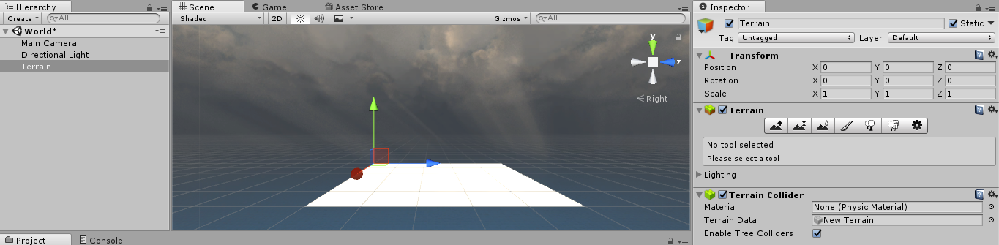

8. Koordinat 2D vs 3D dan sistem arah tangan
Pendahuluan
Selamat kamu sudah bisa menyelesaikan game 2D. Sekarang kita akan mulai belajar bagaimana membuat Game 3D. Pada praktikum kali ini, kita tidak lagi membuat project 2D, melaikan 3D. Mari kita mulai dengan membuat project baru 3D dengan nama “Coba3D”.
Koordinat 2D vs 3D dan sistem arah tangan
Sistem koordinat sebetulnya sudah disinggung sejak pertemuan ke-3 yaitu tentang transasi dan rotasi. Namun demikian, kita akan coba membahas dari sesuatu yang dasar mengenai koordinat 2D dan 3D. Pada koordinat kartesian 2D, letak suatu titik biasanya didefinisikan dengan posisi sepanjang sumbu x dan sumbu y. Berikut adalah gambar yang menjelaskan posisi suatu titik pada x=6 dan y =5.
Berbeda dengan sumbu pada koordinat kartesian 3D. Terdapat satu garis lurus yang dapat dibayangkan seperti masuk dan keluar diantara sumbu x dan y. Gambar berikut mendefinisikan suatu posisi titik di ruang 3D.
Titik tersebut berada ada posisi x=6, y=7, dan z = 5. Semua objek yang berada pada bidang 3D pasti memiliki transformasi posisi sumbu xyz. Selain pemahaman bidang 2D dan 3D, kita juga harus mengetahui tentang arah vektor yang berkaitan dengan sumbu 3D yang digunakan. Arah ini ditentukan oleh sistem kaidah tangan kanan dan kaidah tangan kiri. Dengan sistem tersebut kita dapat memahami arah positif atau negative masing-masing sumbu. Berikut adalah gambaran arah dengan sistem kaidah tangan kanan dan kiri.
Unity menggunakan sistem kaidah tangan kiri. Beberapa game engine yang lain menggunakan kaidah tangan kanan, sebagai contoh OpenGL. Dengan demikian sekarang kita tahu bahwa arah positif dan negatif dari sumbu x,y, dan z Unity mengikuti arah dari ibu jari, telunjuk, dan jari tengah dengan sistem kaidah tangan kiri.
Sebagai tambahan, pada Unity terdapat dua jenis koordinat system yaitu koordinat yang relatif terhadap ruang dunia (world space) dan koordinat yang relative terhadap ruang objek (object space). Jenis koordinat itu dikenal dengan istilah koordinat lokal dan koordinaat global atau digambarkan dengan gambar berikut:
Camera
Scene game pada unity akan bergantung dari mana suatu objek Camera ditempatkan. Seperti yang telah disinggung di pertemuan sebelumnya, pada dasarnya bentuk 2D pada Unity merupakan bentuk “flat” dari ruang 3D. Berikut adalah gambaran dua jenis proyeksi Camera pada unity yaitu ortografis dan perspektif yang mirip. (kiri prespektif, kanan ortografis)
Lalu apa bedanya? Mata manusia di dunia nyata dapat melihat beberapa objek yang nampak besar atau kecil tergantung dari sudut pandang penempatan objek tersebut, apakah didepan atau belakang. Hal ini dikenal sebagai efek perspektif. Sama halnya pada Computer Graphics atau pada unity, Scene pada game 3D membutuhkan suatu sudut pandang yang realistic seperti bagaimana mata manusia berfungsi untuk melihat suatu objek.
Namun demikian, terkadang mata manusia juga dapat melihat beberapa objek sama rata dan tidak memperhitungkan jarak antar objek. Ortografis didapatkan dengan syarat arah penglihatan orang yang melihat suatu objek dianggap tegak lurus terhadap bidang objek yang dilihatnya. Hal ini memungkinkan pengembang game di Unity untuk dapat membuat game 2D yaitu dengan proyeksi kamera ortografis.
Pada Camera unity, terdapat fitur bernama Occlusion Culling. Occlusion Culling memungkinkan untuk menonaktifkan objek-objek yang tidak dapat dilihat oleh Camera karena terlalu jauh atau terhambat pandangannya oleh objek lain. Berikut adalah scene yang tidak menerapkan occlusion culling:
Berikut adalah scene yang menerapkan occlusion culling:
Untuk dapat menerapkan Occlusion Culling dapat dipelajari di: https://docs.unity3d.com/Manual/OcclusionCulling.html . Pada praktikum kali ini tidak akan dijelaskan secara mendetail tentang penggunaan occlusion culling ini.
Lighting
Untuk membuat efek bayangan pada objek-objek 3D, diperlukan suatu cahaya yang memiliki intensitas, arah, dan warna. Unity mendukung efek cahaya yaitu dengan komponen Light. Ada beberapa tipe dari cahaya yang ada pada Unity yaitu: point. Spot, directional, area,emissive, dan ambient.
Point light memungkinkan untuk membuat cahaya dari titik pusat (lingkaran) sampai cahaya itu melingkupi keseluruhan lingkaran tadi. Spot hanya memberikan cahaya pada bagian tertentu saja seperti saat menggunakan senter atau lampu kendaraan bermotor. Directional light seperti pada cahaya matahari. Area light seperti penerangan yang hanya menerangi dengan lingkup persegi. Emisive seperti membuat efek cahaya yang menyala dalam gelap. Ambient light untuk memperlihatkan gambaran suhu dari suatu objek atau untuk membuat efek kartun. Berikut gambaran suatu objek dengan komponen light menerangi objek berbentuk bola:
Bermain dengan Objek Primitif
Ketika membuat project untuk pertama kalinya, secara default terdapat dua game object yaitu Main Camera dan Directional Light. Lihat pada Inspector Main Camera, pastikan bahwa Projection yang digunakan adalah perspective. Kemudian di Inspector Directional Light, pastikan bahwa type adalah Directional. Unity menyediakan objek 3D primitif yang dapat secara langsung dibuat seperti gambar berikut:
Klik kanan pada hierarchy window->3D Object-> Maka akan ada banyak pilihan objek 3D primitive yang disediakan unity. Pilih salah satu objek primitive tersebut, maka objek akan secara otomatis tertambah di scene.
PRAKTIKUM:
Pastikan sudah membuat project “Coba3D” dan Simpan scene dengan nama “Main”.
Buat beberapa game objek dari game objek primitive seperti cube, sphere, Capsule, Quad, dan Plane .
Susun semua kelima objek tersebut didalam scene.
Gunakan transform tool untuk memposisikan objek sesuai keinginan.
Gunakan gizmos (klik pada salah satu warna) untuk memudahkan melihat objek yang ada pada scene.
Klik kanan dan tahan, kemudian geser kekanan kekiri pada scene untuk mengganti sudut pandang.
Klik tengah pada mouse scroll, kemudian geser kekanan dan kekiri pada scene untuk menyesuaikan posisi objek terhadap scene.
Klik kiri dan tahan, kemudian geser kekanan kekiri pada scene untuk menseleksi beberapa objek secara langsung.
Biasakan menggunakan kendali pada langkah 6, 7, dan 8 pada scene untuk memudahkan dalam pengembangan game 3D dengan unity.
Jalankan unity dan amati yang terjadi.
KUMPULKAN:
Screenshoot game tab. Simpan dengan nama sc_910_01.jpg File <NIM>.txt dengan rincian isi: - <NIM> - <JAWABAN>
Pertanyaan: Komponen apa saja yang ada pada setiap objek primitive 3D.
Contoh jawaban:
A11200904997.txt
A11200904997
Cube -> Component = Transform, bla, bla
Sphere -> Component = Transform, bla, bla
Pengenalan Material, Shader, & Texture
Pada objek 3D, material, shader, dan texture sangat berhubungan erat satu sama lain. Material adalah bagaimana permukaan suatu objek diperlakukan, disini termasuk tekstur yang akan digunakan, pembatasan objek, dan lain-lain. Pemilihan konfigurasi material tersebut diatur pada shader yang diterapkan. Shader merupkan kode kecil yang berisikan suatu algoritma dan perhitungan matematis untuk menghitung warna,efek, dan konfigurasi material yang terkait.
Tekstur merupakan gambar bitmap yang dapat dijadikan sebagai masukan shader dimana material nanti akan ditempatkan pada permukaan objek 3D. Sebagai contoh terdapat objek bola, dengan menambahkan material dengan shader standard dan texture gambar permukaan bumi maka objek bola tadi dapat menjadi objek bumi secara utuh.
PRAKTIKUM:
Pada project “Coba3D”, scene Main, hapus semua objek kecuali Main Camera dan Directional Light.
Buat objek Cube dan rename dengan nama “Kotak”.
Buat folder Materials pada Project Window.
Pada folder Materials tambahkan material dengan cara, klik kanan->Create->Material, ubah namanya menjadi matKotak.
Klik matKotak pada project window dan lihat pada Inspector.
Perhatikan bahwa Shader yang digunakan adalah Standard Shader, Rendering Mode adalah Opaque dan warna dasar (Albedo) adalah putih.
Disini kita tidak akan merubah kode shader yang ada, tetapi hanya menggunaka saja.
Klik pada gambar kotak putih disebelah Albedo. Dan rubah warnanya menjadi merah. Rubah material supaya lebih mengkilat dengan memberikan nilai 0.5 pada Metalic.
Tarik material matKotak dari Project Window kedalam objek Kotak pada Hierarchy window atau scene view.
Jalankan Unity dan lihat di game tab! (perhatikan jika Kotak tidak terlihat letakkan pada posisi x,y,z = 0)
Buat objek sphere dan rename dengan nama “Bumi”. Posisikan pada x = -1.44, y dan z = 0.
Masukkan gambar earthtex.jpg kedalam folder Materials pada project window.
Buat material baru dengan nama matBumi.
Tarik earthtex kedalam kotak disebelah kiri Albedo dari Inspector matBumi.
Tarik material matBumi dari Project Window kedalam objek Bumi pada Hierarchy window atau scene view.
Jalankan Unity dan lihat di game tab!
KUMPULKAN:
Screenshoot game tab. Simpan dengan nama sc_910_02.jpg
Standard Asset untuk Objek 3D
Sama halnya dengan Standard Asset 2D, dengan mekanisme yang sama kita dapat menambahkan standard asset 3D. Standard asset 3D adalah standard asset selain “2D” yaitu “Cameras”, “Characters”, “Effect”,”Environtment”, dll.
PRAKTIKUM:
Import standard asset “Characters” project Coba3D.
Pastikan select All dan Import.
Buat scene baru dengan nama “EthanInAct”.
Tambahkan object Quad , rename dengan nama “Pijakan” dan letakkan dengan posisi seperti berikut:
Masuk pada Project Window, Assets->Standard Asset->Characters->ThirdPersonCharacter->Prefabs
Tarik objek prefabs ThirdPersonController kedalam objek Pijakan PADA Hierarchy window!
Perhatikan bahwa pada Inspector ThirdPersonController posisi dan rotasi x,y,z = 0. Hal ini disebabkan oleh koordinat acuan saat menambahkan objek ThirdPersonController yang digunakan adalah koordinat local dari objek Pijakan. Teknik ini seringkali disebut dengan parenting object.
Keluarkan objek ThirdPersonController dari Pijakan dengan cara Tarik objek keluar dari Pijakan di Hierarchy window.
Sekarang lihat pada Inspector ThirdPersonController, posisi dan rotasi akan berubah meyesuaikan koordinat global. Jangan ganti posisi x,y,z, ganti rotasi x dari bernilai 90 menjadi 0. Kemudian rubah scale x,y,z dari 1 menjadi 0.2.
Jalankan Unity dan lihat game tab. Jalankan objek ThirdPersonController dengan menekan W,A,S,D dan Spasi pada Keyboard.
KUMPULKAN:
Screenshoot game tab. Simpan dengan nama sc_910_03.jpg
Skybox
Skybox merupakan batasan lingkungan world scene pada game. Pada dasarnya merupakan kubus persegi dimana nanti beberapa game objek akan berada didalamnya. Namun demikian bentuk dari kubusnya tidak akan terlihat seperti kubus melainkan suatu landscape lingkungan yang luas (dengan langit). Pada praktikum ini, akan dicoba untuk membuat skybox dengan 6 sisi kubus atau 6-sided cube atau cubemaping dimana setiap sisi merupakan gambar tekstur yang saling berkesinambungan secara geometri.
PRAKTIKUM:
Buat scene baru dengan nama World.
Pastikan sudah memiliki gambar texture 6 sisi kubus. Gambar skybox dapat di unduh di https://93i.de/downloads/skybox/skyboxset1.zip. Paste folder skybox ke project window.
Buat material baru dengan nama “matSkybox”.
Pada Inspector matSkybox cari shader Skybox/6 Sided.
Isikan gambar “back”,”from”,”left”,”right”,”up”, dan “down” (yang ada didalam folder skybox di project window) pada Inspector matSkybox. (Kunci/lock Inspector matSkybox supaya tidak berpindah-pindah)
Masukkan atau Tarik matSkybox dari project window ke scene view. Atau buka window->lighthing->Settings, pada tab Scene, isikan Skybox Material dengan matSkybox.
Jalankan unity dan lihat apa yang terjadi.
KUMPULKAN:
Screenshoot game tab. Simpan dengan nama sc_910_04.jpg
Terrain
Pada game 3D, baik itu first person camera ataupun third person camera terkadang memiliki lingkungan world yang berisi berbagai macam objek. Objek-objek tersebut seperti: gunung, pepohonan, sungai, dan lain-lain. Jika terdapat berbagai macam object pada scene game 3D, hal itu mengakibatkan turunnya performa game. Penurunan performa itu ditandai dengan turunya FPS game atau game terasa lambat ketika dimainkan (lag). Disamping itu, banyaknya objek memungkinkan banyaknya vertek objek yang di render ketika game berlangsung. Sehingga memory yang dibutuhkan juga sangat besar. Meskipun demikian, kita dapat menggunakan Occlusion Culling untuk menangani masalah optimalisasi terrain ini. Sekarang kita akan mencoba membuat terrain dengan unity.
PRAKTIKUM:
Tetap pada scene “World”.
Tambahkan terrain dengan cara GameObject->3D Object->Terrain.
Double klik pada objek Terrain di hierarchy window.
Perhatikan bahwa di Inspector Terrain terdapat 3 komponen yaitu Transform untuk transformasi, Terrain untuk mengembangkan lingkungan pada terrain yang berisi tools, dan Terrain Collider untuk collider terrain.
Perhatikan pada komponen Terrain dimana memuat 7 alat/tools untuk mengembangkan lingkungan terrain seperti yang diinginkan.
Berikut adalah nama-nama dari tools tersebut (kanan ke kiri): Terrain Settings, Paint Details, Place Trees, Paint Texture, Smooth Height, Paint Height, Raise/Lower Terrain.Pilih dan klik Terrain Settings, scroll ke bawah dan cari di Label Resolution. Isikan Terrain Width dan Height = 100.
Atur height=75. Height terdiri dari ujung titik terendah dari terrain (seperti dibawah sungai) sampai ujung tertitinggi (puncak gunung). Sebagai contoh, kamu ingin membuat gunung di dalam terrain dengan tinggi 150 meter. Kemudian kamu juga menambahkan sungai dengan kedalaman 50 meter. Jadi ukuran height dari terrain yang kamu miliki adalah 150+50 meter yaitu 200 meter. (Sementara jangan rubah bagian dibawah Resolution, karena dapat berimbas langsung seperti hilangnya beberapa objek di terrain yang sudah dibuat)
Pilih dan klik Paint Height, terdapat detail kalimat cara penggunaan Paint Height.
Rubah Height = 20 dan klik tombol “Flatten”. Dengan demikian terrain akan mengangkat sebanyak sampai dengan 20 unit objek pada viewport, tetapi posisi Y tidak akan terpengaruh.
Diatas scene view terdapat symbol light, matikan lighting tersebut.
Pilih dan klik Raise/Lower Terrain Tool.
Putar scene sampai Terrain terlihat seperti kotak putih pada scene.
Gambar Terrain dengan Brushes. Atur Brush Size untuk ukuran perbukitan yang lebih lebar. Atur ketingian perbukitan atau gunung dengan Opacity. Berikut adalah Terrain yang sudah di gambar:
Kita akan dapat melihat LOD (Level Of Detail) dari terrain yang kita buat.
Untuk melihat berapa banyak mesh yang kita buat, Dibawah Tulisan Scene di Scene tab, terdapat mode scene dengan tulisan Shaded. Kemudian klik pada Shaded dan pilih Wireframe. Kemudian lihat Terrain dengan lebih detail dengan cara Zoom In pada salah satu sisi terrain menggunakan scroll mouse.
Pilih dan Klik Terrain Setting, Pada Base Terrain, rubah Pixel Error dengan nilai 10.
Kembalikan mode scene menjadi Shaded.
Pilih dan Klik Paint Height Tool, gunakan property Height untuk mengatur ketinggian Gunung atau bukit. Coba gunakan lagi brush untuk menggambar.
Jika gambar terrain dirasa sudah cukup, tambahkan standard asset “Environment”.
Klik All kemudian klik import.
Masuk pada Project Window -> Assets->Standard Assets-> Environment->TerrainAssets. Masuk pada folder SurfaceTextures.
Perhatikan pada nama-nama texture, hal ini berkaitan dengan “Albedo”,”Specular”, dan “Normal”.
Pilih dan Klik Paint Texture Tool pada Inspector Terrain, dibawah area texture preview, pilih Edit Textures->Add Texture.
Ketika Add Terain Texture box muncul, isikan Albedo (RGB) Smoothness (A) dengan gambar tekture GrassHillAlbedo. Karena tidak ada gambar Normal untuk GrassHill maka biarkan tetap kosong.kemudian klik tombol Add.
Tambahkan texture kedua, Pilih dan Klik Paint Texture Tool pada Inspector Terrain, dibawah area texture preview, pilih Edit Textures->Add Texture.
Isikan Albedo (RGB) Smoothness (A) dengan gambar tekture GrassRockyAlbedo, gunakan Brush dan gambar diatas pegunungan atau bukit-bukit yang tinggi.
Tambahkan texture ketiga, Pilih dan Klik Paint Texture Tool pada Inspector Terrain, dibawah area texture preview, pilih Edit Textures->Add Texture.
Isikan Albedo (RGB) Smoothness (A) dengan gambar tekture MudRockyAlbedoSpecular dan Normal dengan gambar texture MudRockyNormal, gunakan Brush dan gambar dibagian bawah gundukan rumput.
Berikut adalah ketiga texture yang terdaftar.
Sekarang tambahkan pepohononan, gunakan standard asset, Masuk pada Project Window -> Assets->Standard Assets-> Environment->SpeedTree-> Broadleaf folder.
Pilih objek prefab Broadleaf_Desktop dan masukkan pada scene view. Kecilkan scale x,y,z jika pohon terlalu besar dengan nilai 0.2.
Matikan Animate Cross-fading (jangan di centang)

Buat folder Prefabs dibawah Assets pada Project Window.
Tarik dari Broadleaf_Desktop dari hierarchy window kedalam folder Prefabs.
Rename Broadleaf_Desktop di folder prefabs dengan nama “Pohon”.
Hapus objek Broadleaf_Desktop dari scene view atau hierarchy window.
Sangat tidak efisien jika kita menambahkan pohon satu persatu pada scene view, maka dari itu kita gunakan Place Trees Tool pada Inspector Terrain.
Pilih dan Klik Place trees Tool pada Inspector Terrain, dibawah area texture preview, pilih tombol Edit Trees.. -> Add Tree.
Masukan Tree Prefab dengan prefab Pohon.
Kemudian Klik tombol Add.
Akan muncul tombol “Mass Place Trees” pada Inspector Terrain. Klik pada tombol tersebut.
Saatnya membuat sesuatu yang “menyenangkan”, Isikan Number Of Tree sesuka hati (sebagai contoh: 1000 pohon). Kemudian klik tombol Place.
Rubah posisi terrain dengan position x,y, dan z = -10 (bisa jadi tampak jelek, sesuaikan sesuai selera).
Jalankan Unity dan lihat apa yang terjadi pada game tab.
KUMPULKAN:
Screenshoot game tab. Simpan dengan nama sc_910_05.jpg
Latihan (Opsional)
Jika sudah selesai praktikum, silahkan kembangkan game yang ada pada praktikum kali ini dengan pengetahuan yang sebelumnya sudah dipelajari dan kreativitas kamu. Coba tambahkan character ethan didalam terrain dan juga tambahkan kolam air atau sungai didalam terrain. Cari tutorial di Internet mengenai penambahan air.
KUMPULKAN:
Screenshoot game tab. Simpan dengan nama sc_910_06.jpg
REFERENSI
- Hocking, J. (2015). Unity in action. Manning Publications,.
- De Byl, P. (2017). Holistic Mobile Game Development with Unity Second Eds. CRC Press.
- Blackman, S., & Tuliper, A. (2016). Learn Unity for Windows 10 Game Development. Apress.
- https://docs.unity3d.com/Manual/CamerasOverview.html
- https://docs.unity3d.com/Manual/LightingInUnity.html
- https://docs.unity3d.com/Manual/Lighting.html
- https://docs.unity3d.com/Manual/Shaders.html
- https://docs.unity3d.com/Manual/OcclusionCulling.html
- http://answers.unity3d.com/questions/310044/clickable-map.html
- https://docs.unity3d.com/Manual/HOWTO-InstallStandardAssets.html
- https://docs.unity3d.com/Manual/HOWTO-UseSkybox.htm
- https://docs.unity3d.com/Manual/class-Skybox.htm
- https://docs.unity3d.com/Manual/script-Terrain.htm
- https://docs.unity3d.com/Manual/terrain-UsingTerrains.htm
Mekanisme Pengumpulan Praktikum Mingguan
Untuk setiap mahasiswa: Buat 1 folder beri nama NIM lengkap. Masukkan file screenshot sc_910_01.jpg, sc_910_02.jpg, sc_910_03.jpg, sc_910_04, sc_910_05 dan sc_910_06.jpg serta file <NIM.txt>. Kemudian rar atau zip folder NIM kamu tadi dan kirimkan ke ketua kelas.
Contoh: A11200904997.rar
Untuk Ketua Kelas: Siapkan folder dengan nama Kode Kelas “_910” yang berisi kumpulan praktikum setiap mahasiswa. Lalu buat rar atau zip dan kirimkan ke email dosen.
Contoh: A114401_910.rar